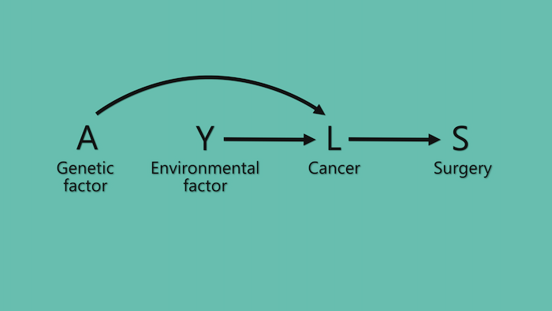
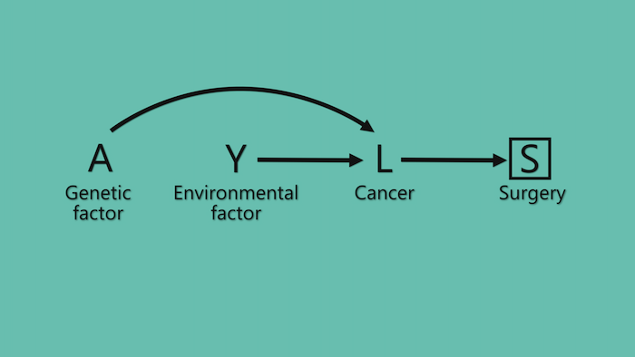

HarvardX PH559x - Causal diagrams: Draw your assumptions before your conclusions
Causal diagrams/DAGs
Association vs. causation
What do we mean by causal effect?
Suppose we have a large population of individuals who have cancer and that they are all given a treatment. Suppose 20% of them die.
Suppose we can go back in time and not give them the treatment/give them a placebo. Suppose 50% of them die.
If we could do this then we would have proven that the treatment has, on average, a causal effect (on death) in this population.
Of course we cannot go back in time but what we can do is compare two groups of individuals that are very similar, essentially identical, with respect to their risk of death.
Quantifying causal effects requires the contrast of the same, or very similar/essentially identical, groups of individuals at different levels of treatment.
Formally, we say that causal effects are defined by counterfactual contrasts.
What do we mean by association?
Suppose we have a large population of individuals who have cancer. Some of them received the treatment and some of them do not.
Suppose 30% of the treated die and 10% of the untreated die.
This does not mean that the treatment has a causal effect on death in this population. Perhaps the treatment has no effect but it is given to people who are at a higher risk of death anyway.
We say that treatment and death are associated because the risk of death is different in the treated and the untreated.
Quantifying associations requires the contrast of two groups of individuals at different levels of treatment.
Formally, we say that associations are defined by simple? contrasts.
The association may be present because the treatment has a causal effect or because the groups of individuals are different. Thus there may be association without causation.
We can also say that treatment and death are associated when having information about the treatment status allows us to predict death better, on average.
Causal diagrams/DAGs are both causal and a statistical (albeit only qualitative) models at the same time. They represent both association and causation simultaneously.
This dual nature of causal DAGs is based on the fact that a causal effect implies dependence/association and lack of a causal effect implies independence/lack of association.
Directed acyclic graphs (DAGs) as causal diagrams/DAGs
Directed acyclic graphs
Arrows of causal graphs are not meant to be deterministic.
Causal Markov condition
A DAG is causal if the causes shared by any pair of variables on the graph are also on the DAG.
If our expert knowledge is insufficient for us to rule out a direct causal effect of variable A on variable Y, we should draw an arrow from A to Y on the causal DAG.
The building blocks of causal diagrams/DAGs
The pipe (cause and effect)
A causes Y through the mediator B.
There is association between A and Y.
The flow of association between A and Y is interrupted when we condition on the mediator B, even though A has a causal effect on Y.
The fork (common cause, confounding)
L causes both A and Y/Both A and Y are caused by L (i.e., A and Y share a common cause L).
There is association between A and Y, even though A has no causal effect on Y.
The flow of association between A and Y is blocked when we condition on the common cause L.
When we’re using data to estimate the causal effect of A on Y, any component of the association between A and Y that is not due to the causal effect of A on Y is considered a systematic bias. In particular, when there is bias due to [NOT conditioning on] a common cause of A and Y, we say that there is confounding bias.
Common causes create [confounding] bias (association w/o causation), unless they are conditioned on.

[Marginal (i.e., unconditional) vs conditional dependence/association.]
The collider (common effect, selection bias)
L is caused by both A and Y/Both A and Y causes L (i.e., A and Y share a common effect L).
There is no association between A and Y. The flow of association between A and Y is blocked by the commont effect/collider L.
The flow of association between A and Y is unblocked when we condition on the common effect/collider L, even though A has no causal effect on Y.
When we’re using data to estimate the causal effect of A on Y, any component of the association between A and Y that is not due to the causal effect of A on Y is considered a systematic bias. In particular, when there is bias due to [conditioning on] a common effect of A and Y, we say that there is selection bias.
Common causes DO NOT create [selection] bias (association w/o causation), unless they are conditioned on.
Selection bias will arise whether we condition on a collider or on something affected by/a descendant of a collider.


D-separation
We have identified three sources of association between two variables A and Y:
Cause and effect
A common cause (confouding bias)
Conditioning on a common effect (or one or more of its descendants) (selection bias)
These are also called structural sources of association.
Another source of association is:
- Chance
Unlike structural sources of association which remain and become sharper as sample size increases, chance associations (due to sampling variability) decrease and eventually disappear as sample size increases.
In this course, we are going to focus on the structural sources of associations, two of which are sources of systematic bias when estimating causal effects. That means that we’re always going to assume that we’re working with a very large study population. That means that we won’t have to worry about chance and we’ll leave statistical inference for another course.
A path is any route between two variables on the DAG. Some paths follow the direction of the arrows (causal paths), while other paths do not follow the direction of the arrows (non-causal paths).
Paths can be either blocked or open according to a set of graphical rules known as D-separation rules. We use D-separation rules to decide whether two variables are D-separated, where D stands for directional.
D-separation rule #1:
If there are no variables being conditioned on, a path is blocked if, and only if, two arrowheads on the path collide at some variable on the path.
As an aside, the definition of collider is path-specific!
D-separation rule #2:
Any path that contains a non-collider that has been conditioned on is blocked.
D-separation rule #3:
A collider that has been conditioned on does not block a path.
D-separation rule #4:
A collider that has a descendant that has been conditioned on does not block a path.
The summary of these D-separation rules is that a path is blocked if, and only if, it contains a non-collider that has been conditioned on, or a collider that has not been conditioned on and has no descendant that had been conditioned on.
So two variables are D-separated if all paths between them are blocked. And two variables are marginally (or unconditionally) independent if they are D-separated without conditioning on all the variables.
On the other hand, we say that two variables are conditionally independent, given a set of variables L, if they are D-separated after conditioning on the set of variables L.
All D-separation says is that two variables would be associated if one causes the other, if they share common causes, or they have a common effect and we condition on the common effect (or one or more of its descendants).